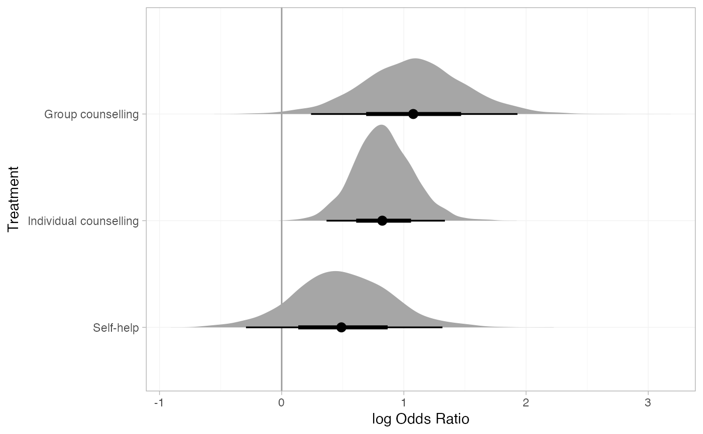
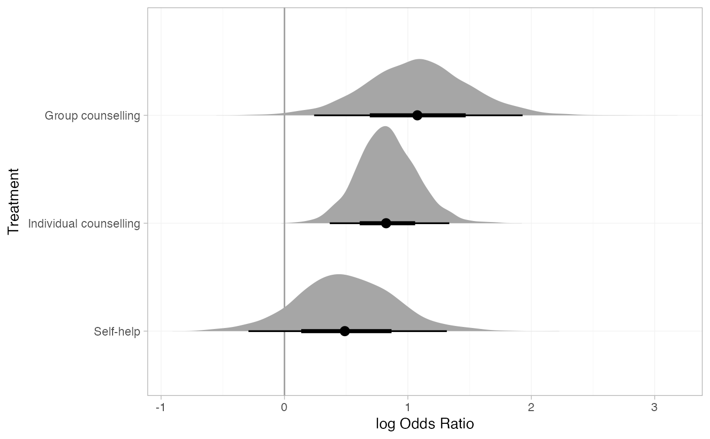
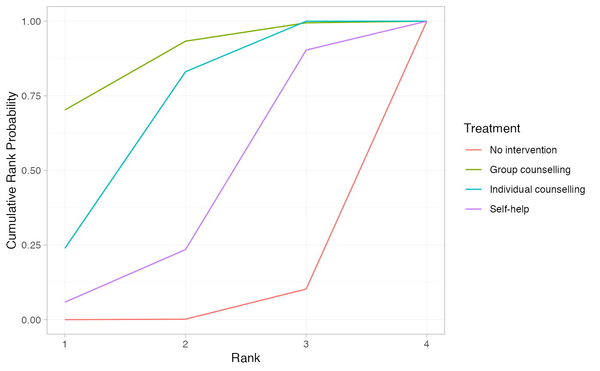
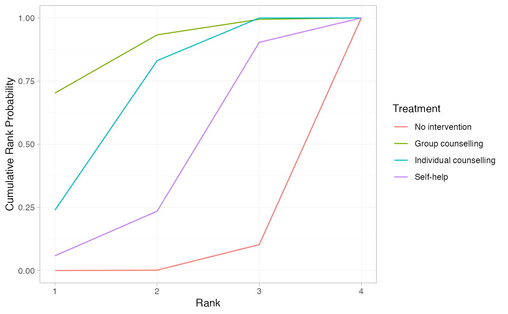

The plot method for nma_summary objects is used to produce plots of
parameter estimates (when called on a stan_nma object or its summary),
relative effects (when called on the output of relative_effects()),
absolute predictions (when called on the output of predict.stan_nma()),
posterior ranks and rank probabilities (when called on the output of
posterior_ranks() or posterior_rank_probs()).
Usage
# S3 method for nma_summary
plot(
x,
...,
stat = "pointinterval",
orientation = c("horizontal", "vertical", "y", "x"),
ref_line = NA_real_
)
# S3 method for nma_parameter_summary
plot(
x,
...,
stat = "pointinterval",
orientation = c("horizontal", "vertical", "y", "x"),
ref_line = NA_real_
)
# S3 method for nma_rank_probs
plot(x, ...)Arguments
- x
A
nma_summaryobject- ...
Additional arguments passed on to the underlying
ggdistplot stat, see Details- stat
Character string specifying the
ggdistplot stat to use, default"pointinterval"- orientation
Whether the
ggdistgeom is drawn horizontally ("horizontal") or vertically ("vertical"), default"horizontal"- ref_line
Numeric vector of positions for reference lines, by default no reference lines are drawn
Details
Plotting is handled by ggplot2 and the stats and geoms provided in
the ggdist package. As a result, the output is very flexible. Any
plotting stats provided by ggdist may be used, via the argument
stat. The default uses
ggdist::stat_pointinterval(), to
produce medians and 95% Credible Intervals with 66% inner bands.
Additional arguments in ... are passed to the ggdist stat, to
customise the output. For example, to produce means and Credible Intervals,
specify point_interval = mean_qi. To produce an 80% Credible Interval
with no inner band, specify .width = c(0, 0.8).
Alternative stats can be specified to produce different summaries. For
example, specify stat = "[half]eye" to produce (half) eye plots, or stat = "histinterval" to produce histograms with intervals.
A full list of options and examples is found in the ggdist vignette
vignette("slabinterval", package = "ggdist").
A ggplot object is returned which can be further modified through the
usual ggplot2 functions to add further aesthetics, geoms, themes, etc.
Examples
## Smoking cessation
# \donttest{
# Run smoking RE NMA example if not already available
if (!exists("smk_fit_RE")) example("example_smk_re", run.donttest = TRUE)
# }
# \donttest{
# Produce relative effects
smk_releff_RE <- relative_effects(smk_fit_RE)
plot(smk_releff_RE, ref_line = 0)
 # Customise plot options
plot(smk_releff_RE, ref_line = 0, stat = "halfeye")

# Further customisation is possible with ggplot commands
plot(smk_releff_RE, ref_line = 0, stat = "halfeye", slab_alpha = 0.6) +
ggplot2::aes(slab_fill = ifelse(..x.. < 0, "darkred", "grey60"))
# Customise plot options
plot(smk_releff_RE, ref_line = 0, stat = "halfeye")

# Further customisation is possible with ggplot commands
plot(smk_releff_RE, ref_line = 0, stat = "halfeye", slab_alpha = 0.6) +
ggplot2::aes(slab_fill = ifelse(..x.. < 0, "darkred", "grey60"))
 # Produce posterior ranks
smk_rank_RE <- posterior_ranks(smk_fit_RE, lower_better = FALSE)
plot(smk_rank_RE)
# Produce posterior ranks
smk_rank_RE <- posterior_ranks(smk_fit_RE, lower_better = FALSE)
plot(smk_rank_RE)
 # Produce rank probabilities
smk_rankprob_RE <- posterior_rank_probs(smk_fit_RE, lower_better = FALSE)
plot(smk_rankprob_RE)
# Produce rank probabilities
smk_rankprob_RE <- posterior_rank_probs(smk_fit_RE, lower_better = FALSE)
plot(smk_rankprob_RE)
 # Produce cumulative rank probabilities
smk_cumrankprob_RE <- posterior_rank_probs(smk_fit_RE, lower_better = FALSE,
cumulative = TRUE)
plot(smk_cumrankprob_RE)
# Produce cumulative rank probabilities
smk_cumrankprob_RE <- posterior_rank_probs(smk_fit_RE, lower_better = FALSE,
cumulative = TRUE)
plot(smk_cumrankprob_RE)
 # Further customisation is possible with ggplot commands
plot(smk_cumrankprob_RE) +
ggplot2::facet_null() +
ggplot2::aes(colour = Treatment)

# }
# Further customisation is possible with ggplot commands
plot(smk_cumrankprob_RE) +
ggplot2::facet_null() +
ggplot2::aes(colour = Treatment)

# }